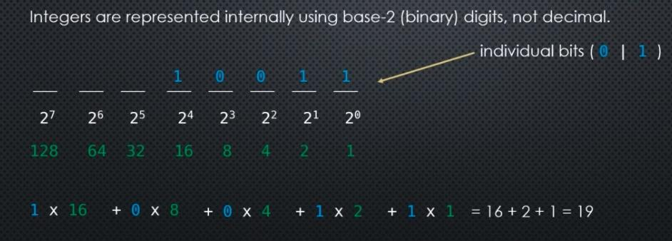
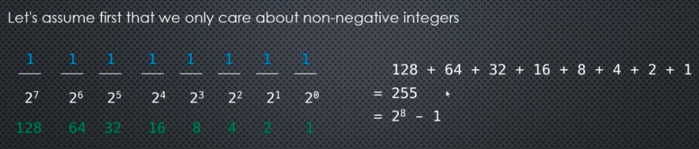

Python - numeric datatypes
Integers in Python¶ ¶
Integers are represented in binary form internally. For example, to represent a number like 19, the binary form is 10011, which takes 5 bits.

Thus, what is the largest unsigned integer that can be stored with 8 bits? The answer is 255.

If we want signed integers, then 1 bit is used to represent the sign, leaving $2^{7}$ . Thus the range is now [-127, 127]
In [17]:
import math
for i in [8, 16, 32, 64, 128]:
val = math.pow(2, i-1)
print(f'Int range : {i} bits \t: [-{val:,.0f} to {val:,.0f}]')
Integers in Python use variable number of bits depending on the size of the value stored in it. Thus, the largest number that can be stored is limited by the amount of memory available to the kernel.
In [18]:
import sys
print(sys.getsizeof(0)) # integer that uses the smallest size
print(sys.getsizeof(10))
print(sys.getsizeof(1000))
print(sys.getsizeof(2**1000)) # exponentially large number
print(sys.getsizeof(2**1000000))
In [ ]: